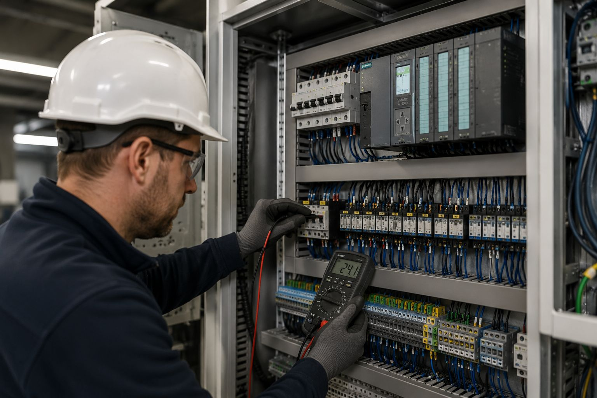
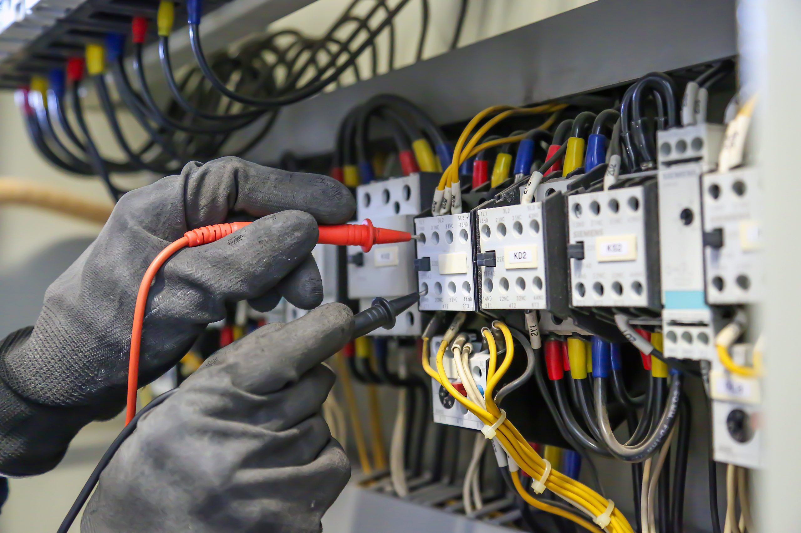

Transportlijn 01
Operationeel
- Temp: 54 C
- Trilling: 2.1 mm/s
- Bedrijfsuren: 12034
- Onderhoud: 12/09/2026
Fictieve website-demo voor industriële serviceverlening
Diagnose, onderhoud en technische interventies voor productieomgevingen waar stilstand geen optie is.
Centrale storingsflow
Deze module is demonstratief en simuleert lokale intake-validatie. Er wordt geen echte interventie aangemaakt.
Installatiestatus
Alle meetwaarden hieronder zijn fictieve demo-inhoud en dienen uitsluitend ter illustratie van de interface.
Operationeel
Onder observatie
Onderhoud gepland
Storing
Operationeel
Onder observatie
Operationele beeldlaag


Beelden uit de lokale industrial beeldmap met geverifieerde status in het manifest.
Technische servicematrix
| Domein | Typische symptomen | Mogelijke interventie | Actie |
|---|---|---|---|
| Preventief onderhoud | Toenemende slijtage, afwijkend geluid | Inspectie, smering, vervangingsplan | Plan onderhoud |
| Correctief onderhoud | Uitval tijdens productie | Storingsanalyse en doelgericht herstel | Meld storing |
| Storingsanalyse | Onregelmatige werking, alarmsignalen | Controle van voeding, besturing en componenten | Analyse starten |
| Mechanische herstellingen | Speling, uitlijningverlies, overbelasting | Demontage, uitlijning, herstel van delen | Technische vraag |
| Elektrotechnische diagnose | Sensorfouten, onstabiele motorsturing | Meting, foutlokalisatie, componentcontrole | Meld storing |
| Pneumatiek en elektropneumatiek | Drukverlies, trage actuatoren | Lekcontrole, ventielcontrole, afstelling | Diagnosehulp |
| Uitlijning en lagercontrole | Trilling, temperatuurstijging | Uitlijning, lagerinspectie, vervangingsadvies | Plan onderhoud |
| Sensoren en actuatoren | Intermitterende signalen | Signaaltest, vervangingscontrole, resetplan | Technische vraag |
| Productieondersteuning | Capaciteitsverlies tijdens piek | Bijsturing op locatie en operationele support | Bespreek scope |
| Technische inspecties | Onzeker onderhoudsbeeld | Inspectierapport en prioriteitenlijst | Inspectie plannen |
Interactieve storingsanalyse
Informatief overzicht. Schakel een bevoegde technieker in en volg de geldende lockout/tagout-procedure.
Onderhoudsplan
Visuele inspectie, lekcontrole, statusalarm check
Smering, controle van mechanische koppelingen
Lagercontrole, thermische inspectie, verbindingen
Uitlijning, sensortest, veiligheidscircuits
Revisiecheck en preventieve vervangingsplanning
Scope-gebonden totaalinspectie en heropstartcontrole
Shutdown & turnaround
Veiligheid als kernproces
Alle werkzaamheden moeten worden uitgevoerd door bevoegde personen volgens de geldende veiligheidsprocedures.
Technische case
Korte stops en resetmeldingen tijdens piekbelasting.
Combinatie van verhoogde trilling en wisselende sensorrespons in de aandrijflijn.
Slijtage in koppeling met bijkomende afwijking in sensorbevestiging.
Mechanische correctie, componentcontrole en functionele test voor vrijgave.
Stabilere lijnwerking en minder ongeplande onderbrekingen.
Kortere inspectiecyclus op kritieke componenten en periodieke uitlijning.
Onderdelen en herstelvoorbereiding
Geen webshopfunctie: dit paneel ondersteunt herstelplanning en interventievoorbereiding.
Technische capaciteit
480
34
1.250
02:15u
Demonstratieve waarden voor deze website-demo.
Operationele servicezone
Voor productie-uitval of veiligheidskritische storingen.
Meld storingVoor onderhoudsvensters, inspecties en periodieke opvolging.
Plan onderhoudVoor scopebespreking, capaciteit of technische afstemming.
Stuur e-mailKaartplaceholder - in een echt project komt hier een locatie-integratie.